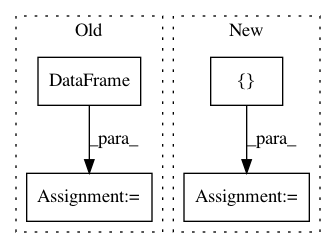

1401e8bd2bdbccbedb696bd742e4934d5ba96fcb,tests/test_clustersupervisor.py,,,#,9
Before Change
pytest.skip("Clustersupervisor is currently broken.", allow_module_level=True)
TEST_DF = pd.DataFrame(np.meshgrid(np.arange(20), np.arange(20))[0])
TEST_SERIES = pd.Series(np.arange(20))
TEST_ARRAY = np.arange(20)
TEST_LIST = list(range(20))
TEST_CLUSTERS = np.array(([1] * 10) + ([2] * 10))
TEST_LABELS_STR = {"1.2", "2.2"}
TEST_LABELS_NUM = {1.2, 2.2}
TEST_LABELS_CHAR = {"hello1", "hello2"}
data_opts = [TEST_DF, TEST_SERIES, TEST_ARRAY, TEST_LIST]
label_opts = [TEST_LABELS_NUM, TEST_LABELS_STR, TEST_LABELS_CHAR]
@pytest.mark.parametrize(
After Change
from superintendent import ClusterSupervisor
TEST_ARRAY = np.array([[1, 2, 3], [1, 2, 3], [1, 2, 3], [1, 2, 3]])
TEST_LABELS = np.array([1, 1, 2, 2])
TEST_REPRESENTATIVENESS = np.array([0.5, 0.4, 0.6, 0.9])
In pattern: SUPERPATTERN
Frequency: 4
Non-data size: 4
Instances
Project Name: janfreyberg/superintendent
Commit Name: 1401e8bd2bdbccbedb696bd742e4934d5ba96fcb
Time: 2018-10-31
Author: janfreyberg@users.noreply.github.com
File Name: tests/test_clustersupervisor.py
Class Name:
Method Name:
Project Name: cesium-ml/cesium
Commit Name: e547a82c24b37c157bc9b40d2724a7b1fd0a7b0f
Time: 2017-04-17
Author: brettnaul@gmail.com
File Name: cesium/featurize.py
Class Name:
Method Name: load_featureset
Project Name: fmfn/BayesianOptimization
Commit Name: 0e95b604efae17157786f9980b912a34633791c4
Time: 2016-10-27
Author: viglovikov@trueaccord.com
File Name: bayes_opt/bayesian_optimization.py
Class Name: BayesianOptimization
Method Name: points_to_csv
Project Name: nilmtk/nilmtk
Commit Name: f1aa5b71f3665884fe7ba0f612c2aeff92369ce5
Time: 2015-07-10
Author: nipunb@iiitd.ac.in
File Name: nilmtk/disaggregate/hart_85.py
Class Name: Hart85
Method Name: disaggregate